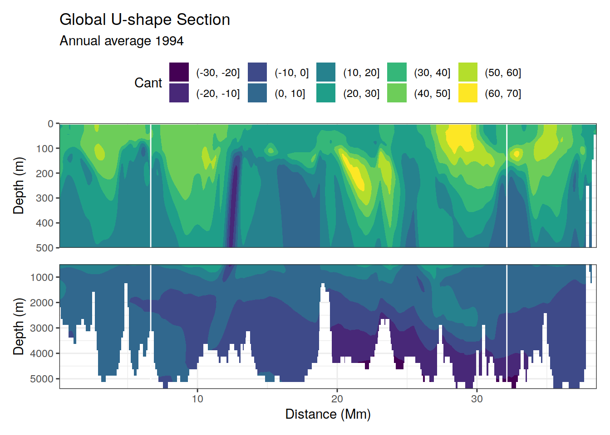

eMLR model loop
Donghe Zhu and Dr Jens Daniel Müller
22 November, 2020
Last updated: 2020-11-22
Checks: 7 0
Knit directory: eMLR_model/
This reproducible R Markdown analysis was created with workflowr (version 1.6.2). The Checks tab describes the reproducibility checks that were applied when the results were created. The Past versions tab lists the development history.
Great! Since the R Markdown file has been committed to the Git repository, you know the exact version of the code that produced these results.
Great job! The global environment was empty. Objects defined in the global environment can affect the analysis in your R Markdown file in unknown ways. For reproduciblity it’s best to always run the code in an empty environment.
The command set.seed(20201105) was run prior to running the code in the R Markdown file. Setting a seed ensures that any results that rely on randomness, e.g. subsampling or permutations, are reproducible.
Great job! Recording the operating system, R version, and package versions is critical for reproducibility.
Nice! There were no cached chunks for this analysis, so you can be confident that you successfully produced the results during this run.
Great job! Using relative paths to the files within your workflowr project makes it easier to run your code on other machines.
Great! You are using Git for version control. Tracking code development and connecting the code version to the results is critical for reproducibility.
The results in this page were generated with repository version 4f2df34. See the Past versions tab to see a history of the changes made to the R Markdown and HTML files.
Note that you need to be careful to ensure that all relevant files for the analysis have been committed to Git prior to generating the results (you can use wflow_publish or wflow_git_commit). workflowr only checks the R Markdown file, but you know if there are other scripts or data files that it depends on. Below is the status of the Git repository when the results were generated:
Ignored files:
Ignored: .Rhistory
Ignored: .Rproj.user/
Ignored: data/GLODAPv2_2020/
Ignored: data/World_Ocean_Atlas_2018/
Ignored: data/model/
Ignored: output/model_subsetting/
Unstaged changes:
Modified: code/Workflowr_project_managment_jdm.R
Modified: code/plotting_functions.R
Note that any generated files, e.g. HTML, png, CSS, etc., are not included in this status report because it is ok for generated content to have uncommitted changes.
These are the previous versions of the repository in which changes were made to the R Markdown (analysis/read_model_data.Rmd) and HTML (docs/read_model_data.html) files. If you’ve configured a remote Git repository (see ?wflow_git_remote), click on the hyperlinks in the table below to view the files as they were in that past version.
| File | Version | Author | Date | Message |
|---|---|---|---|---|
| html | 9dde566 | Donghe-Zhu | 2020-11-22 | Build site. |
| Rmd | f46bd16 | Donghe-Zhu | 2020-11-22 | local rebuild |
| html | a838c04 | jens-daniel-mueller | 2020-11-21 | Build site. |
| Rmd | 25b49ab | jens-daniel-mueller | 2020-11-21 | fixed absolute path issue |
| html | 193aed4 | jens-daniel-mueller | 2020-11-21 | Build site. |
| Rmd | 6573083 | jens-daniel-mueller | 2020-11-21 | fixed absolute path issue |
| html | bb3d89d | jens-daniel-mueller | 2020-11-21 | Build site. |
| Rmd | 07d5d18 | jens-daniel-mueller | 2020-11-21 | switched to absolute path for model subsetting |
| html | 1ff3f8d | jens-daniel-mueller | 2020-11-18 | Build site. |
| Rmd | 599fab5 | jens-daniel-mueller | 2020-11-18 | rebuild after revision and with modified files names and navbar |
library(tidyverse)
library(patchwork)
library(stars)
library(collapse)
library(lubridate)
library(rqdatatable)1 Read GLODAP clean data
GLODAP <- read_csv(here::here("data/GLODAPv2_2020",
"GLODAPv2.2020_Merged_clean.csv"))2 Subset model data according to GLODAP observation
Here we subset regridded (1x1) data from the model with variable forcing, according to the presence of GLODAP observations in a previously cleaned file.
Simultaneously, we calculate annual model summary statistics and annual average DIC fields.
# set path to model output files
path_model_regridded <-
"/net/kryo/work/loher/CESM_output/RECCAP2/regridded/"
# set path to model analysis/subsetting output files
path_model_analysis <-
"/nfs/kryo/work/loher/CESM_output/RECCAP2/analysis/"# set name of modelled to be subsetted
model_ID <- "GIAF_JRA_2020"
# for loop across years
years <- c("1982":"2018")
for (i_year in years) {
# for manual testing
# i_year <- years[1]
# select GLODAP data for that year
GLODAP_year <- GLODAP %>%
filter(year == i_year)
# for loop across variables
variables <-
c("DIC")
# variables <-
# c("DIC", "ALK", "O2", "NO3", "PO4", "SiO3", "SALT", "TEMP")
# create month x lat x lon grid of observations
grid_subset <- GLODAP_year %>%
select(month, lat, lon) %>%
unique()
# create month x lat x lon x depth grid of observations
obs_depth <- GLODAP_year %>%
select(month, lat, lon, depth) %>%
unique()
for (i_variable in variables) {
# Uncomment line below for manual testing
# i_variable <- variables[1]
# read list of all files
file <-
list.files(
path = path_model_regridded,
pattern = paste(model_ID, "_", i_variable, "_", i_year, ".nc", sep = "")
)
print(file)
# read in data
variable_data <-
read_ncdf(paste(path_model_regridded,
file,
sep = ""))
# convert to tibble
variable_data_tibble <- variable_data %>%
as_tibble()
# remove open link to nc file
rm(variable_data)
# remove na values -> do this early, to speed up subsequent tasks
variable_data_tibble <-
variable_data_tibble %>%
filter(!is.na(!!sym(i_variable)))
# convert longitudes
variable_data_tibble <- variable_data_tibble %>%
mutate(lon = if_else(lon < 20, lon + 360, lon))
# mutate variables and filter NaN value
variable_data_tibble <- variable_data_tibble %>%
rename(depth = z_t) %>%
mutate(
depth = depth / 100,
month = month(time),!!sym(i_variable) := as.numeric(!!sym(i_variable))
) %>%
select(-time)
# calculate model summary stats
stats <- variable_data_tibble %>%
pull(!!sym(i_variable)) %>%
summary()
stats <- c(year = i_year, variable = i_variable, stats)
if (exists("stats_summary")) {
stats_summary <- bind_rows(stats_summary, stats)
}
if (!exists("stats_summary")) {
stats_summary <- stats
}
rm(stats)
# subset model at month x lat x lon grid of observations
model_subset <-
inner_join(grid_subset, variable_data_tibble)
# join model and month x lat x lon x depth grid of observations
model_obs <- full_join(model_subset, obs_depth)
# calculate nr of observations per month x lat x lon grid
model_obs <- model_obs %>%
group_by(month, lat, lon) %>%
mutate(n = sum(!is.na(!!sym(i_variable)))) %>%
ungroup()
# interpolate variable value from model to observation depth
model_obs_interpo <- model_obs %>%
filter(n > 1) %>%
group_by(lon, lat, month) %>%
arrange(depth) %>%
mutate(!!sym(i_variable) := approxfun(depth,!!sym(i_variable), rule = 2)(depth)) %>%
ungroup()
# subsetted interpolated values at observation depth
model_obs_interpo <-
inner_join(obs_depth, model_obs_interpo) %>%
select(-n) %>%
mutate(year = as.numeric(i_year))
# rename interpolated model variable to indicate as model output
model_obs_interpo <- model_obs_interpo %>%
rename(!!sym(paste(i_variable, "model", sep = "_")) := !!sym(i_variable))
# add model subset to GLODAP
GLODAP <-
natural_join(
GLODAP,
model_obs_interpo,
by = c("year", "month", "lat", "lon", "depth"),
jointype = "FULL"
)
# calculate annual average variable
variable_data_tibble_annual_average <- variable_data_tibble %>%
fselect(-month) %>%
fgroup_by(lat, lon, depth) %>% {
add_vars(fgroup_vars(., "unique"),
fmean(., keep.group_vars = FALSE))
}
# select surface annual average variable
variable_data_tibble_annual_average_surface <-
variable_data_tibble_annual_average %>%
filter(depth == min(depth))
# surface map of variable
surface_GLODAP(
variable_data_tibble_annual_average_surface,
obs_depth,
model_obs_interpo,
i_variable
)
ggsave(
here::here(
"output/model_subsetting/surface_model_GLODAP_obs",
paste(i_variable, "_", i_year, ".png", sep = "")
),
width = 5,
height = 3
)
# GLODAP with model subset:red point
# GLODAP without model subset:black point
# combine annual average model file together
if (i_variable == "DIC") {
# write file for annually averaged model field
variable_data_tibble_annual_average %>%
write_csv(paste(
paste(path_model_analysis, "climatologies/", model_ID, sep = ""),
paste("/DIC_annual_average_", i_year, ".csv", sep = ""), sep = ""
))
}
}
}
# write file for GLODAP observations + subsetted model variables
GLODAP %>%
write_csv(paste(
paste(path_model_analysis, "glodapv2_2020_synthetic_data/", sep = ""),
"GLODAP_with_model_subset.csv",
sep = ""
))
# write file for model summary statistics
stats_summary %>%
write_csv(paste(
paste(path_model_analysis, "diagnostics/", sep = ""),
paste(model_ID, "summary_stats.csv", sep = "_")
))3 Test for interpolation
# subset model at month x lat x lon grid of observations
model_subset <-
inner_join(grid_subset, variable_data_tibble)
# join model and month x lat x lon x depth grid of observations
model_obs <- full_join(model_subset, obs_depth)
# calculate nr of observations per month x lat x lon grid
model_obs <- model_obs %>%
group_by(month, lat, lon) %>%
mutate(n = sum(!is.na(!!sym(i_variable)))) %>%
ungroup()
# interpolate variable value from model to observation depth
model_obs_interpo <- model_obs %>%
filter(n > 1) %>%
group_by(lon, lat, month) %>%
arrange(month, lat, lon, depth) %>%
mutate(!!sym(paste(i_variable, "interpolate", sep = "_")) := approxfun(depth,!!sym(i_variable), rule = 2)(depth)) %>%
ungroup()
ggplot() +
geom_path(
data = model_obs_interpo %>%
filter(lat == 1.5, lon == 316.5, !is.na(!!sym(i_variable)), month == 1) %>%
arrange(depth),
aes(!!sym(i_variable), depth, col = "model")
) +
geom_point(
data = model_obs_interpo %>%
filter(lat == 1.5, lon == 316.5, month == 1),
aes(!!sym(
paste(i_variable, "interpolate", sep = "_")
), depth, col = "interpolated")
) +
geom_point(
data = model_obs_interpo %>%
filter(lat == 1.5, lon == 316.5, !is.na(!!sym(i_variable)), month == 1) %>%
arrange(depth),
aes(!!sym(i_variable), depth, col = "model")
) +
scale_y_reverse() +
scale_color_brewer(palette = "Dark2", name = "") +
labs(title = paste("Interpolation to sampling depth -", i_variable, "of year", i_year))4 Annual average DIC fields
To derive Cant estimates for certain years, we calculate annual average DIC fields also for the output of a model with normal forcing.
# set name of modelled to be subsetted
model_ID <- "GECO_NYF_cstCO2"
# for loop across years
years <- c("1982":"2018")
# years <- c("1982":"1983")
for (i_year in years) {
# for manual testing
# i_year <- years[1]
# read list of all files
file <-
list.files(path = path_model_regridded,
pattern = paste(model_ID, "_DIC_", i_year, ".nc", sep = ""))
print(file)
# read in data
normal_data <-
read_ncdf(paste(path_model_regridded,
file,
sep = ""))
# convert to tibble
normal_data_tibble <- normal_data %>%
as_tibble()
# remove open link to nc file
rm(normal_data)
# remove na values -> do this early, to speed up subsequent tasks
normal_data_tibble <-
normal_data_tibble %>%
filter(!is.na(DIC))
# convert longitudes
normal_data_tibble <- normal_data_tibble %>%
mutate(lon = if_else(lon < 20, lon + 360, lon))
# mutate variables and filter NaN value
normal_data_tibble <- normal_data_tibble %>%
rename(depth = z_t) %>%
mutate(depth = depth / 100,
month = month(time),
DIC = as.numeric(DIC)) %>%
select(-time)
# calculate annual average DIC
normal_data_tibble_annual_average <- normal_data_tibble %>%
fselect(-month) %>%
fgroup_by(lat, lon, depth) %>% {
add_vars(fgroup_vars(., "unique"),
fmean(., keep.group_vars = FALSE))
}
# write file for annually averaged model DIC
normal_data_tibble_annual_average %>%
write_csv(paste(
paste(path_model_analysis, "climatologies/",model_ID, sep = ""),
paste("/DIC_annual_average_", i_year, ".csv", sep = ""), sep = ""
))
}5 Calculate model Cant
The model Cant can be calculate as the difference between two model runs. Currently, this is performed for year 1994 and 2007.
# read in variable and normal forcing DIC data
years <- c("1994", "2007")
# GLODAP <- read_csv(here::here("data/GLODAPv2_2020",
# "GLODAPv2.2020_Merged_clean.csv"))
for (i_year in years) {
# for manual testing
# i_year <- years[1]
# read in variable forcing annual average DIC data
variable_annual_average_DIC <-
read_csv(paste(
paste(path_model_analysis, "climatologies/GIAF_JRA_2020/", sep = ""),
paste("DIC_annual_average_", i_year, ".csv", sep = ""), sep = ""
)) %>%
rename(DIC_variable = DIC)
# read in normal forcing annual average DIC data
normal_annual_average_DIC <-
read_csv(paste(
paste(path_model_analysis, "climatologies/GECO_NYF_cstCO2/", sep = ""),
paste("DIC_annual_average_", i_year, ".csv", sep = ""), sep = ""
)) %>%
rename(DIC_normal = DIC)
# calculate Cant
cant <-
full_join(variable_annual_average_DIC, normal_annual_average_DIC) %>%
mutate(Cant = DIC_variable - DIC_normal)
rm(variable_annual_average_DIC, normal_annual_average_DIC)
cant <- inner_join(basinmask, cant)
# global surface Cant plot
print(map_global(cant, "Cant"))
# global section Cant plot
print(section_global(cant, "Cant"))
# zonal section Cant plot
for (i_basin_AIP in unique(cant$basin_AIP)) {
breaks <- c(seq(-30, 70, 10), Inf)
print(section_zonal(cant,
i_basin_AIP = i_basin_AIP,
"Cant"))
}
}





sessionInfo()R version 4.0.3 (2020-10-10)
Platform: x86_64-pc-linux-gnu (64-bit)
Running under: openSUSE Leap 15.1
Matrix products: default
BLAS: /usr/local/R-4.0.3/lib64/R/lib/libRblas.so
LAPACK: /usr/local/R-4.0.3/lib64/R/lib/libRlapack.so
locale:
[1] LC_CTYPE=en_US.UTF-8 LC_NUMERIC=C
[3] LC_TIME=en_US.UTF-8 LC_COLLATE=en_US.UTF-8
[5] LC_MONETARY=en_US.UTF-8 LC_MESSAGES=en_US.UTF-8
[7] LC_PAPER=en_US.UTF-8 LC_NAME=C
[9] LC_ADDRESS=C LC_TELEPHONE=C
[11] LC_MEASUREMENT=en_US.UTF-8 LC_IDENTIFICATION=C
attached base packages:
[1] stats graphics grDevices utils datasets methods base
other attached packages:
[1] rqdatatable_1.2.9 rquery_1.4.6 wrapr_2.0.4 lubridate_1.7.9
[5] collapse_1.4.2 stars_0.4-3 sf_0.9-6 abind_1.4-5
[9] patchwork_1.1.0 forcats_0.5.0 stringr_1.4.0 dplyr_1.0.2
[13] purrr_0.3.4 readr_1.4.0 tidyr_1.1.2 tibble_3.0.4
[17] ggplot2_3.3.2 tidyverse_1.3.0 workflowr_1.6.2
loaded via a namespace (and not attached):
[1] httr_1.4.2 viridisLite_0.3.0 jsonlite_1.7.1
[4] here_0.1 modelr_0.1.8 assertthat_0.2.1
[7] blob_1.2.1 cellranger_1.1.0 yaml_2.2.1
[10] pillar_1.4.6 backports_1.1.10 lattice_0.20-41
[13] glue_1.4.2 RcppEigen_0.3.3.7.0 digest_0.6.27
[16] promises_1.1.1 rvest_0.3.6 colorspace_1.4-1
[19] htmltools_0.5.0 httpuv_1.5.4 Matrix_1.2-18
[22] pkgconfig_2.0.3 broom_0.7.2 haven_2.3.1
[25] scales_1.1.1 whisker_0.4 later_1.1.0.1
[28] git2r_0.27.1 farver_2.0.3 generics_0.0.2
[31] ellipsis_0.3.1 withr_2.3.0 cli_2.1.0
[34] magrittr_1.5 crayon_1.3.4 readxl_1.3.1
[37] evaluate_0.14 fs_1.5.0 fansi_0.4.1
[40] xml2_1.3.2 RcppArmadillo_0.10.1.0.0 lwgeom_0.2-5
[43] class_7.3-17 data.table_1.13.2 tools_4.0.3
[46] hms_0.5.3 lifecycle_0.2.0 munsell_0.5.0
[49] reprex_0.3.0 isoband_0.2.2 compiler_4.0.3
[52] e1071_1.7-4 rlang_0.4.8 classInt_0.4-3
[55] units_0.6-7 grid_4.0.3 rstudioapi_0.11
[58] labeling_0.4.2 rmarkdown_2.5 gtable_0.3.0
[61] DBI_1.1.0 R6_2.5.0 knitr_1.30
[64] rprojroot_1.3-2 KernSmooth_2.23-18 stringi_1.5.3
[67] parallel_4.0.3 Rcpp_1.0.5 vctrs_0.3.4
[70] dbplyr_1.4.4 tidyselect_1.1.0 xfun_0.18